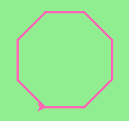

In Python, a function is a named sequence of statements that belong together. Their primary purpose is to help us organize programs into chunks that match how we think about the solution to the problem.
The syntax for a function definition is:
def NAME( PARAMETERS ):
STATEMENTS
You can make up any names you want for the functions you create, except that you can’t use a name that is a Python keyword, and the names must follow the rules for legal identifiers. The parameters specifies what information, if any, you have to provide in order to use the new function. Another way to say this is that the parameters specify what the function needs to do it’s work.
There can be any number of statements inside the function, but they have to be indented from the def. In the examples in this book, we will use the standard indentation of four spaces. Function definitions are the second of several compound statements we will see, all of which have the same pattern:
We’ve already seen the for loop which follows this pattern.
In a function definition, the keyword in the header is def, which is followed by the name of the function and some parameters enclosed in parentheses. The parameter list may be empty, or it may contain any number of parameters separated from one another by commas. In either case, the parentheses are required.
We need to say a bit more about the parameters. In the definition, the parameter list is more specifically known as the formal parameters. This list of names describes those things that the function will need to receive from the user of the function. When you use a function, you provide values to the formal parameters.
The figure below shows this relationship. A function needs certain information to do its work. These values, often called arguments or actual parameters, are passed to the function by the user.

This type of diagram is often called a black-box diagram because it only states the requirements from the perspective of the user. The user must know the name of the function and what arguments need to be passed. The details of how the function works are hidden inside the “black-box”.
Suppose we’re working with turtles and a common operation we need is to draw squares. It would make sense if we did not have to duplicate all the steps each time we want to make a square. “Draw a square” can be thought of as an abstraction of a number of smaller steps. We will need to provide two pieces of information for the function to do its work: a turtle to do the drawing and a size for the side of the square. We could represent this using the following black-box diagram.

Here is a function to capture this idea. Give it a try.
(ch04_1)
This function is named drawSquare. It has two parameters — one to tell the function which turtle to move around and the other to tell it the size of the square we want drawn. In the function definition they are called t and sz respectively. Make sure you know where the body of the function ends — it depends on the indentation and the blank lines don’t count for this purpose!
docstrings
If the first thing after the function header is a string (some tools insist that it must be a triple-quoted string), it is called a docstring and gets special treatment in Python and in some of the programming tools.
Another way to retrieve this information is to use the interactive interpreter, and enter the expression <function_name>.__doc__, which will retrieve the docstring for the function. So the string you write as documentation at the start of a function is retrievable by python tools at runtime. This is different from comments in your code, which are completely eliminated when the program is parsed.
By convention, Python programmers use docstrings for the key documentation of their functions.
Defining a new function does not make the function run. To do that we need a function call. This is also known as a function invocation. We’ve already seen how to call some built-in functions like print, range and int. Function calls contain the name of the function being executed followed by a list of values, called arguments, which are assigned to the parameters in the function definition. So in the second to the last line of the program, we call the function, and pass alex as the turtle to be manipulated, and 50 as the size of the square we want.
Once we’ve defined a function, we can call it as often as we like and its statements will be executed each time we call it. In this case, we could use it to get one of our turtles to draw a square and then we can move the turtle and have it draw a different square in a different location. Note that we lift the tail so that when alex moves there is no trace. We put the tail back down before drawing the next square.
(ch04_1a)
In the next example, we’ve changed the drawSquare function a little and we get tess to draw 15 squares with some variations. Once the function has been defined, we can call it as many times as we like with whatever actual parameters we like.
(ch04_2)
Scratch Editor
Check your understanding
5.1.1: What is a function in Python?
5.1.2: What is one main purpose of a function?
5.1.3: Which of the following is a valid function header (first line of a function definition)?
5.1.4: What is the name of the following function?
def drawSquare(t, sz):
"""Make turtle t draw a square of with side sz."""
for i in range(4):
t.forward(sz)
t.left(90)
5.1.5: What are the parameters of the following function?
def drawSquare(t, sz):
"""Make turtle t draw a square of with side sz."""
for i in range(4):
t.forward(sz)
t.left(90)
5.1.6: Considering the function below, which of the following statements correctly invokes, or calls, this function (i.e., causes it to run)? Assume we already have a turtle named alex.
def drawSquare(t, sz):
"""Make turtle t draw a square of with side sz."""
for i in range(4):
t.forward(sz)
t.left(90)
5.1.7: True or false: A function can be called several times by placing a function call in the body of a loop.
Most functions require arguments, values that control how the function does its job. For example, if you want to find the absolute value of a number, you have to indicate what the number is. Python has a built-in function for computing the absolute value:
(ch04_4)
In this example, the arguments to the abs function are 5 and -5.
Some functions take more than one argument. For example the math module contains a function called pow which takes two arguments, the base and the exponent.
(ch04_5)
Note
Of course, we have already seen that raising a base to an exponent can be done with the ** operator.
Another built-in function that takes more than one argument is max.
(ch04_6)
max can be sent any number of arguments, separated by commas, and will return the maximum value sent. The arguments can be either simple values or expressions. In the last example, 503 is returned, since it is larger than 33, 125, and 1. Note that max also works on lists of values.
Furthermore, functions like range, int, abs all return values that can be used to build more complex expressions.
So an important difference between these functions and one like drawSquare is that drawSquare was not executed because we wanted it to compute a value — on the contrary, we wrote drawSquare because we wanted it to execute a sequence of steps that caused the turtle to draw a specific shape.
Functions that return values are sometimes called fruitful functions. In many other languages, a chunk that doesn’t return a value is called a procedure, but we will stick here with the Python way of also calling it a function, or if we want to stress it, a non-fruitful function.
Fruitful functions still allow the user to provide information (arguments). However there is now an additional piece of data that is returned from the function.

How do we write our own fruitful function? Lets start with a very simple mathematical function square. The square function will take one number as a parameter and return the result of squaring that number. Here is the black-box diagram with the Python code following.

(ch04_square)
The return statement is followed an expression which is evaluated. Its result is returned to the caller as the “fruit” of calling this function. Because the return statement can contain any Python expression we could have avoided creating the temporary variable y and simply used return x*x. Try modifying the square function above to see that this works just the same. On the other hand, using temporary variables like y in the program above makes debugging easier. These temporary variables are referred to as local variables.
Notice something important here. The name of the variable we pass as an argument — toSquare — has nothing to do with the name of the formal parameter — x. It is as if x = toSquare is executed when square is called. It doesn’t matter what the value was named in the caller. In square, it’s name is x. You can see this very clearly in codelens, where the global variables and the local variables for the square function are in separate boxes.
As you step through the example in codelens notice that the return statement not only causes the function to return a value, but it also returns the flow of control back to the place in the program where the function call was made.
|
Source Code
Step ? of ?
|
|
Program output:
|
Another important thing to notice as you step through this codelens demonstration is the highlighting of line numbers. Codelens boldfaces the line numbers that it has executed. When you first start running this codelens demonstration you will notice that line 1 is bolded. The next line to be bolded is line 5. Why is this? Because function definition is not the same as function execution. Lines 2 and 3 will not be bolded until the function is called on line 6.
Short variable names are more economical and sometimes make code easier to read: E = mc2 would not be nearly so memorable if Einstein had used longer variable names! If you do prefer short names, make sure you also have some comments to enlighten the reader about what the variables are used for.
All Python functions return None unless there is an explicit return statement with a value other than None. Consider the following common mistake made by beginning Python programmers. As you step through this pay very close attention to the return value in the local variables listing. Then look at what is printed when the function returns.
|
Source Code
Step ? of ?
|
|
Program output:
|
Scratch Editor
Check your understanding
5.2.1: What is wrong with the following function definition:
def addEm(x, y, z):
return x+y+z
print('the answer is', x+y+z)
5.2.2: What will the following function return?
def addEm(x, y, z):
print x+y+z
An assignment statement in a function creates a local variable for the variable on the left hand side of the assignment operator. This variable only exists inside the function, and you cannot use it outside. For example, consider again the square function:
|
Source Code
Step ? of ?
|
|
Program output:
|
If you press the ‘last >>’ button you will see an error message. When we try to use y on line 6 (outside the function) Python looks for a global variable named y but does not find one. This results in the error: Name Error: 'y' is not defined.
The variable y only exists while the function is being executed — we call this its lifetime. When the execution of the function terminates (returns), the local variables are destroyed. Codelens helps you visualize this because the local variables disappear after the function returns.
Formal parameters are also local and act like local variables. For example, the lifetime of x begins when square is called, and the lifetime ends when the function completes its execution.
So it is not possible for a function to set some local variable to a value, complete its execution, and then when it is called again next time, recover the local variable. Each call of the function creates new local variables, and their lifetimes expire when the function returns to the caller.
Conversely, a function may access a global variable. But this is considered bad form by nearly all programmers. Look at the following, nonsensical variation of the square function.
(badsquare_1)
Although the badsquare function works, it is silly and poorly written. But it illustrates an important rule about how variables are looked up in Python. First, Python looks at the variables that are defined as local variables in the function. We call this the local scope. If the variable name is not found in the local scope, then Python looks at the global variables, or global scope. This is exactly the case illustrated in the code above. power is not found locally in badsquare but it does exist globally. The appropriate way to write this function would be to pass power as a parameter. For practice, you should rewrite bad square to have a second parameter called power.
Assignment statements in the local function can not change variables defined outside the function. Consider the following codelens example:
|
Source Code
Step ? of ?
|
|
Program output:
|
Now step through the code. What do you notice about the values of power in the local scope compared to the global scope?
The value of power in the local scope was different than the global scope. That is because in this example power was used on the left hand side of the assignment statement power = p. When a variable name is used on the left hand side of an assignment statement Python creates a local variable. When a local variable has the same name as a global variable we say that the local shadows the global. A shadow means that the global variable cannot be accessed by Python because the local variable will be found first. This is another good reason not to use global variables. As you can see, it makes your code confusing and difficult to understand.
To cement all of these ideas even further lets look at one final example. Inside the square function we are going to make an assignment to the parameter x There’s no good reason to do this other than to emphasize the fact that the parameter x is a local variable. If you step through the example in codelens you will see that although x is 0 in the local variables for square x remains 2 in the global scope. This is confusing to many beginning programmers who think that an assignment to a formal parameter will cause a change to the value of the variable that was used as the actual parameter; especially when the two share the same name. But this example demonstrates that that is clearly not how Python operates.
|
Source Code
Step ? of ?
|
|
Program output:
|
Scratch Editor
Check your understanding
5.3.1: What is a variable's scope?
5.3.2: What is a local variable?
5.3.3: Can you use the same name for a local variable as a global variable?

In the previous example, we wrote a function that computes the square of a number. The algorithm we used in the function was simple: multiply the number by itself. In this section we will reimplement the square function and use a different algorithm, one that relies on addition instead of multiplication.
If you want to multiply two numbers together, the most basic approach is to think of it as repeating the process of adding one number to itself. The number of repetitions is where the second number comes into play. For example, if we wanted to multiply three and five, we could think about it as adding three to itself five times. Three plus three is six, plus three is nine, plus three is 12, and finally plus three is 15. Generalizing this, if we want to implement the idea of squaring a number, call it n, we would add n to itself n times.
Do this by hand first and try to isolate exactly what steps you take. You’ll find you need to keep some “running total” of the sum so far, either on a piece of paper, or in your head. Remembering things from one step to the next is precisely why we have variables in a program. This means that we will need some variable to remember the “running total”. It should be initialized with a value of zero. Then, we need to update the “running total” the correct number of times. For each repetition, we’ll want to update the running total by adding the number to it.
In words we could say it this way. To square the value of n, we will repeat the process of updating a running total n times. To update the running total, we take the old value of the “running total” and add n. That sum becomes the new value of the “running total”.
Here is the program in activecode. Note that the function definition is the same as it was before. All that has changed is the details of how the squaring is done. This is a great example of “black box” design. We can change out the details inside of the box and still use the function exactly as we did before.
(sq_accum1)
Note
What would happen if we put the assignment runningTotal = 0 inside the for statement? Not sure? Try it and find out.
In the program above, notice that the variable runningtotal starts out with a value of 0. Next, the iteration is performed x times. Inside the for loop, the update occurs. runningtotal is reassigned a new value which is the old value plus the value of x.
This pattern of iterating the updating of a variable is commonly referred to as the accumulator pattern. We refer to the variable as the accumulator. This pattern will come up over and over again. Remember that the key to making it work successfully is to be sure to initialize the variable before you start the iteration. Once inside the iteration, it is required that you update the accumulator.
Here is the same program in codelens. Step thru the function and watch the “running total” accumulates the result.
|
Source Code
Step ? of ?
|
|
Program output:
|
Scratch Editor
Check your understanding
5.4.1: Consider the following code:
def square(x):
runningtotal = 0
for counter in range(x):
runningtotal = runningtotal + x
return runningtotal
What happens if you put the initialization of runningtotal (the
line runningtotal = 0) inside the for loop as the first
instruction in the loop?
It is important to understand that each of the functions we write can be used and called from other functions we write. This is one of the most important ways that computer scientists take a large problem and break it down into a group of smaller problems. This process of breaking a problem into smaller subproblems is called functional decomposition.
Here’s a simple example of functional decomposition using two functions. The first function called square simply computes the square of a given number. The second function called sum_of_squares makes use of square to compute the sum of three numbers that have been squared.
|
Source Code
Step ? of ?
|
|
Program output:
|
Even though this is a pretty simple idea, in practice this example illustrates many very important Python concepts, including local and global variables along with parameter passing. Note that when you step through this example, codelens bolds line 1 and line 5 as the functions are defined. The body of square is not executed until it is called from the sum_of_squares function for the first time on line 6. Also notice that when square is called there are two groups of local variables, one for square and one for sum_of_squares. As you step through you will notice that x, `` and ``y are local variables in both functions and may even have different values. This illustrates that even though they are named the same they are very different.
Lets look at another example that uses two functions, but illustrates another important computer science problem solving technique called generalization. Let’s assume now we want to write a function to draw a square. The generalization step is to realize that a square is just a special kind of rectangle.
To draw a rectangle we need to be able to call the function with different arguments for width and height. Unlike the case of the square, we cannot repeat the same thing 4 times, because the four sides are not equal. However, it is the case that drawing the bottom and right sides are the same sequence as drawing the top and left sides. So we eventually come up with this rather nice code that can draw a rectangle.
def drawRectangle(t, w, h):
"""Get turtle t to draw a rectangle of width w and height h."""
for i in range(2):
t.forward(w)
t.left(90)
t.forward(h)
t.left(90)
The parameter names are deliberately chosen as single letters to ensure they’re not misunderstood. In real programs, once you’ve had more experience, we will insist on better variable names than this. The point is that the program doesn’t “understand” that you’re drawing a rectangle or that the parameters represent the width and the height. Concepts like rectangle, width, and height are the meaning we humans have, not concepts that the program or the computer understands.
Thinking like a computer scientist involves looking for patterns and relationships. In the code above, we’ve done that to some extent. We did not just draw four sides. Instead, we spotted that we could draw the rectangle as two halves and used a loop to repeat that pattern twice.
But now we might spot that a square is a special kind of rectangle. A square simply uses the same value for both the height and the width. We already have a function that draws a rectangle, so we can use that to draw our square.
def drawSquare(tx, sz): # a new version of drawSquare
drawRectangle(tx, sz, sz)
Here is the entire example with the necessary set up code.
(ch04_3)
There are some points worth noting here:
So far, it may not be clear why it is worth the trouble to create all of these new functions. Actually, there are a lot of reasons, but this example demonstrates two:
Lab
Scratch Editor
When you are working with functions it is really important to know the order in which statements are executed. This is called the flow of execution and we’ve already talked about it a number of times in this chapter.
Execution always begins at the first statement of the program. Statements are executed one at a time, in order, from top to bottom. Function definitions do not alter the flow of execution of the program, but remember that statements inside the function are not executed until the function is called.
Function calls are like a detour in the flow of execution. Instead of going to the next statement, the flow jumps to the first line of the called function, executes all the statements there, and then comes back to pick up where it left off.
That sounds simple enough, until you remember that one function can call another. While in the middle of one function, the program might have to execute the statements in another function. But while executing that new function, the program might have to execute yet another function!
Fortunately, Python is adept at keeping track of where it is, so each time a function completes, the program picks up where it left off in the function that called it. When it gets to the end of the program, it terminates.
What’s the moral of this sordid tale? When you read a program, don’t read from top to bottom. Instead, follow the flow of execution. At this risk of sounding repetitive this means that you will read the def statements as you are scanning from top to bottom, but you should skip the body of the function until you reach a point where that function is called.
Scratch Editor
Check your understanding
5.6.1: Consider the following Python code. Note that line numbers are included on the left.
1 def pow(b, p): 2 y = b ** p 3 return y 4 5 def square(x): 6 a = pow(x, 2) 7 return a 8 9 n = 5 10 result = square(n) 11 print(result)Which of the following best reflects the order in which these lines of code are processed in Python?
5.6.2: Consider the following Python code. Note that line numbers are included on the left.
1 def pow(b, p): 2 y = b ** p 3 return y 4 5 def square(x): 6 a = pow(x, 2) 7 return a 8 9 n = 5 10 result = square(n) 11 print(result)What does this function print?
Recall from our discussion of modules that there were a number of things that turtles can do. Here are a couple more tricks (remember that they are all described in the module documentation).
Ok, so can we get tess to draw a bar chart? Let us start with some data to be charted,
xs = [48, 117, 200, 240, 160, 260, 220]
Corresponding to each data measurement, we’ll draw a simple rectangle of that height, with a fixed width. Here is what we would like to create.

We can quickly see that drawing a bar will be similar to drawing a rectangle or a square. Since we will need to do it a number of times, it makes sense to create a function, drawBar, that will need a turtle and the height of the bar. We will assume that the width of the bar will be 40 units. Once we have the function, we can use a simple for loop to process the list of data values.
def drawBar(t, height):
""" Get turtle t to draw one bar, of height. """
t.left(90) # Point up
t.forward(height) # Draw up the left side
t.right(90)
t.forward(40) # width of bar, along the top
t.right(90)
t.forward(height) # And down again!
t.left(90) # put the turtle facing the way we found it.
...
for v in xs: # assume xs and tess are ready
drawBar(tess, v)
It is a nice start! The important thing here was the mental chunking. To solve the problem we first broke it into smaller pieces. In particular, our chunk is to draw one bar. We then implemented that chunk with a function. Then, for the whole chart, we repeatedly called our function.
Next, at the top of each bar, we’ll print the value of the data. We’ll do this in the body of drawBar, by adding t.write(' ' + str(height)) as the new third line of the body. We’ve put a little space in front of the number, and turned the number into a string. Without this extra space we tend to cramp our text awkwardly against the bar to the left. Finally, we’ll add the two methods needed to fill each bar.
The one remaining problem is related the fact that our turtle lives in a world where the center is at position (0,0). In this problem, it would help if (0,0) were in the lower left hand corner. To solve this we can use our setworldcoordinates method to rescale the window. While we are at it, we should make the window fit the data. The tallest bar will correspond to the maximum data value. The width of the window will need to be proportional to the number of bars (the number of data values) where each has a width of 40. Using this information, we can compute the coordinate system that makes sense for the data set. To make it look nice, we’ll add a bit of space at the bottom and at the left as a border.
Here is the complete program. Try it and then change the data to see that it can adapt to the new values.
(ch05_barchart)
Scratch Editor
A statement that consists of two parts:
The syntax of a compound statement looks like this:
keyword expression:
statement
statement ...
Use the drawsquare function we wrote in this chapter in a program to draw the image shown below. Assume each side is 20 units. (Hint: notice that the turtle has already moved away from the ending point of the last square when the program ends.)

Write a program to draw this. Assume the innermost square is 20 units per side, and each successive square is 20 units bigger, per side, than the one inside it.

Write a non-fruitful function drawPoly(someturtle, somesides, somesize) which makes a turtle draw a regular polygon. When called with drawPoly(tess, 8, 50), it will draw a shape like this:
Draw this pretty pattern.
The two spirals in this picture differ only by the turn angle. Draw both.

Write a non-fruitful function drawEquitriangle(someturtle, somesize) which calls drawPoly from the previous question to have its turtle draw a equilateral triangle.
Write a fruitful function sumTo(n) that returns the sum of all integer numbers up to and including n. So sumTo(10) would be 1+2+3...+10 which would return the value 55. Use the equation (n * (n + 1)) / 2.
Write a function areaOfCircle(r) which returns the area of a circle of radius r. Make sure you use the math module in your solution.
Write a non-fruitful function to draw a five pointed star, where the length of each side is 100 units.

Extend your program above. Draw five stars, but between each, pick up the pen, move forward by 350 units, turn right by 144, put the pen down, and draw the next star. You’ll get something like this:
What would it look like if you didn’t pick up the pen?
Extend the star function to draw an n pointed star. (Hint: n must be an odd number greater or equal to 3).
Write a function called drawSprite that will draw a sprite. The function will need parameters for the turtle, the number of legs, and the length of the legs. Invoke the function to create a sprite with 15 legs of length 120.
Rewrite the function sumTo(n) that returns the sum of all integer numbers up to and including n. This time use the accumulator pattern.
Write a function called mySqrt that will approximate the square root of a number, call it n, by using Newton’s algorithm. Newton’s approach is an iterative guessing algorithm where the initial guess is n/2 and each subsequent guess is computed using the formula: newguess = (1/2) * (oldguess + (n/oldguess)).
Write a function called myPi that will return an approximation of PI (3.14159...). Use the Liebniz approximation as described in class.
Write a function called myPi that will return an approximation of PI (3.14159...). Use the Madhava approximation as described in class.
Write a function called fancySquare that will draw a square with fancy corners (spites on the corners). You should implement and use the drawSprite function from above. For an even more interesting look, how about adding small triangles to the ends of the sprite legs.
Scratch Editor